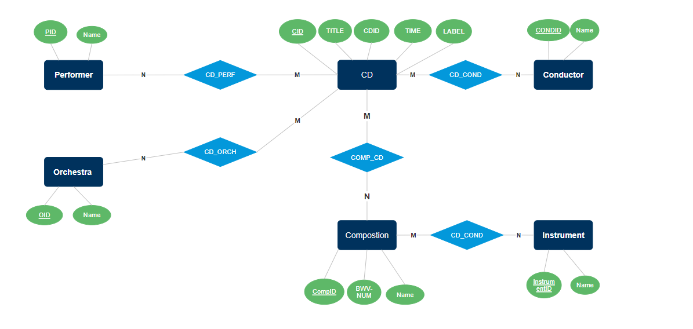

Labb 3
Databas Design

SQL Questions
-
Q1 : list all the harpsichord pieces in the library
Q1
-
Q2 : list all available concertos (composition names that contain the word "concert")
Q2
-
Q3 : list all CDs with a recording of BWV 780, together with artists' names and CD titles
Q3
-
Q4 : list all the Glenn Gould recordings
Q4
-
Q5 : how many recordings in the library are of the same piece?
Q5
-
Q6 : Show compositions with Al Fine's favorite key (F Minor)
Q6
Create two forms where the user can search for information in the database
according to: • BWV number • Instrument